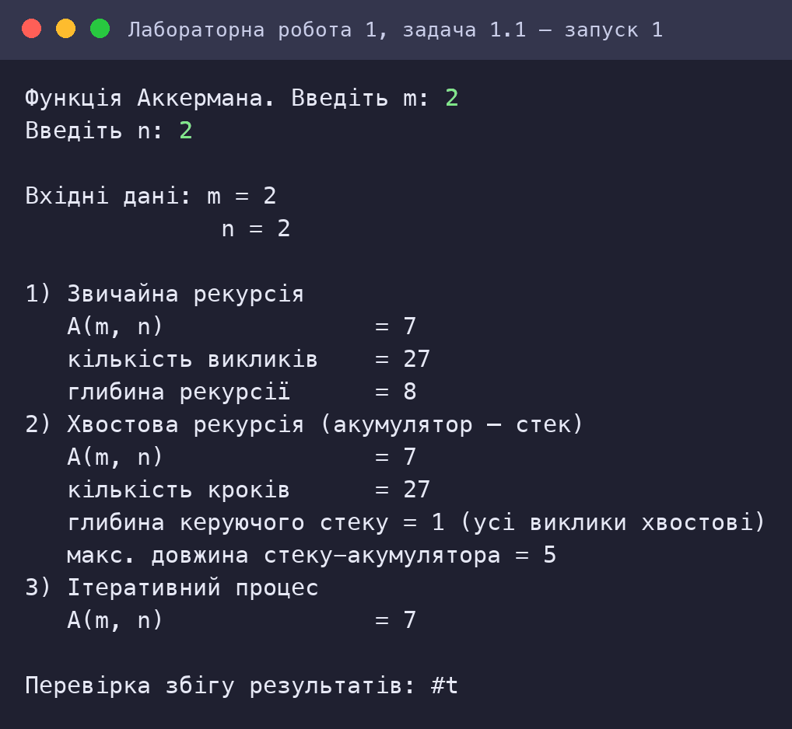
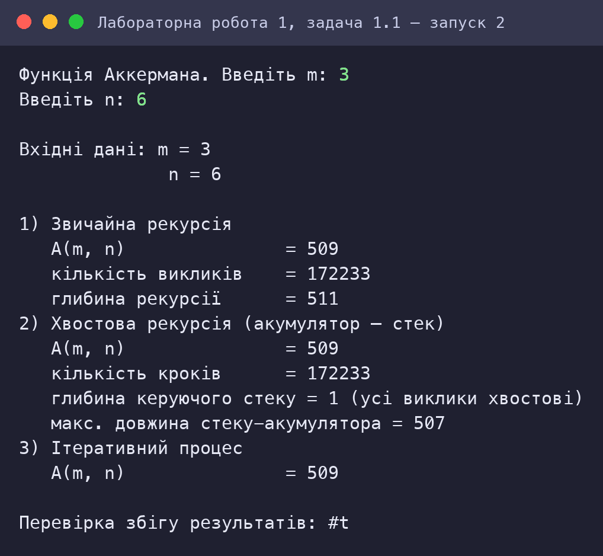
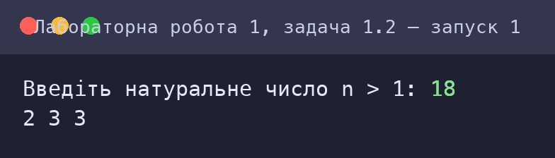
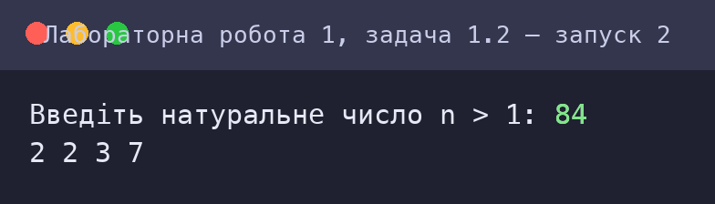
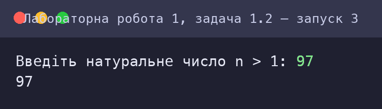
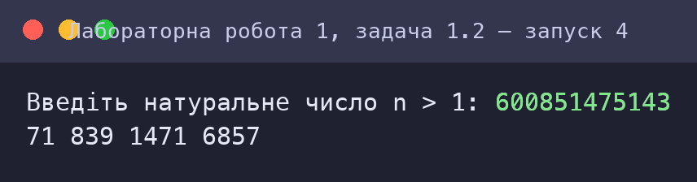
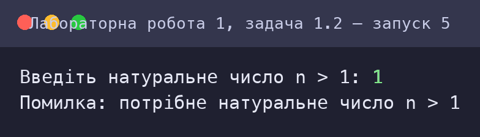

Скріншот роботи та результату
Знімки консолі відтворюють роботу програм: запуск виконано в інтерпретаторі Guile 3.0 (R5RS-сумісний); введені користувачем значення виділено зеленим. Для кожного запуску наведено умови та результат.
Задача 1.1: Функція Аккермана
Запуск 1: Контрольний тест A(2, 2) = 7

Запуск 2: A(3, 6) = 509

Порівняння часу виконання на великих значеннях
A(2, 300) результат = 603
звичайна рекурсія: час (мс) = 1.2781500000000001
хвостова рекурсія: час (мс) = 1.3787499999999997
ітеративний процес: час (мс) = 9.999999999976694e-5
A(3, 6) результат = 509
звичайна рекурсія: час (мс) = 1.152666666666671
хвостова рекурсія: час (мс) = 1.301666666666667
ітеративний процес: час (мс) = 3.33333333330188e-4
A(3, 8) результат = 2045
звичайна рекурсія: час (мс) = 19.400000000000006
хвостова рекурсія: час (мс) = 21.013999999999996
ітеративний процес: час (мс) = 0.001999999999995339
A(4, 1) результат = 65533
звичайна рекурсія: час (мс) = 21404.422000000002
хвостова рекурсія: час (мс) = 19162.711000000003
ітеративний процес: час (мс) = 18984.344000000005
Задача 1.2: Прості дільники числа
Запуск 1: Контрольний тест: n = 18 → 2 3 3

Запуск 2: n = 84 → 2 2 3 7

Запуск 3: Просте число n = 97

Запуск 4: Велике число n = 600851475143

Запуск 5: Некоректне n = 1
